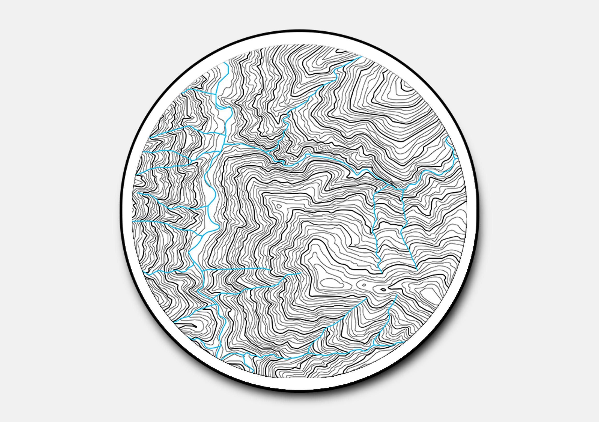
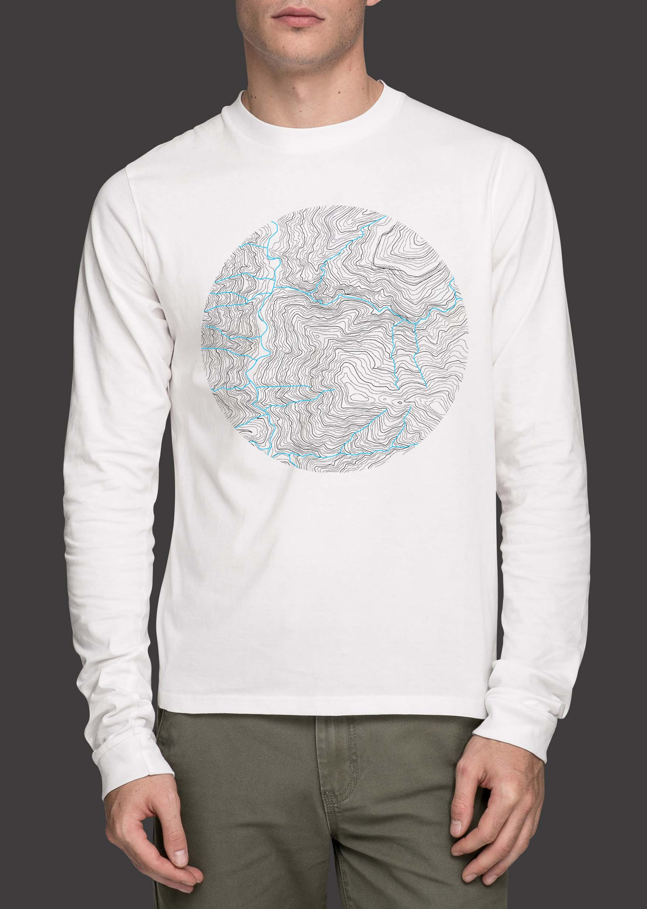
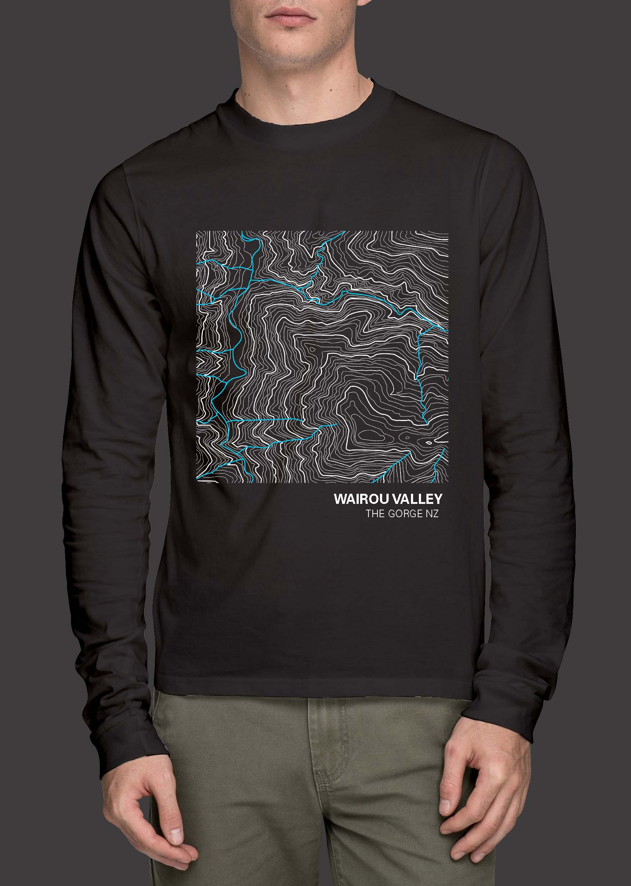
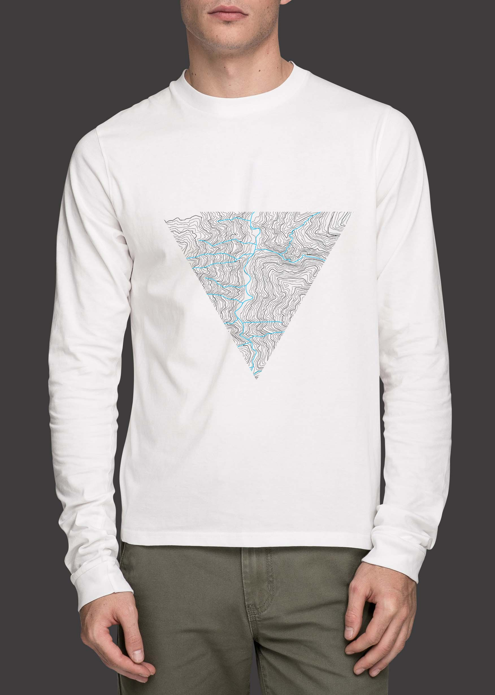
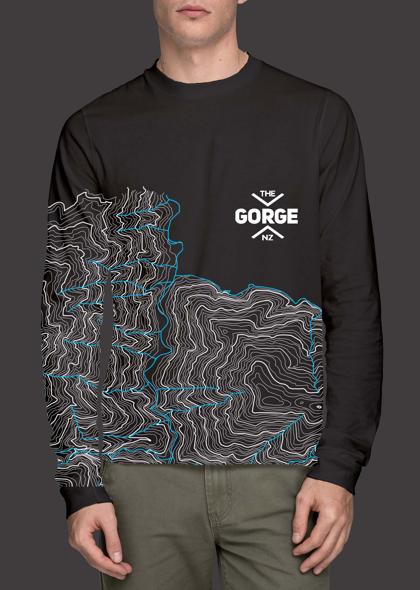

The Gorge NZ
Approaching Upshift studio in Nelson I was granted the opportunity to do some work experience providing a concept design for one of their clients 'the Gorge NZ. The brand specializes in providing amazing mountain bike experience across their 54 tracks in the Nelson Wairou Valley. Receiving feedback from riders of interest in purchasing merchandise to remember their experience, I was tasked with investigating possible expansion of the brand into various forms of merchandise for customers to enjoy. Testing the logo on a variety of merchandise I found that while it had the ability to carry itself well, it could incorporate more visual inspiration from the tracks of the Gorge NZ in stickers and t-shirts to enhance the brand. Researching current merchandise in biking and outdoor exploration, I was inspired by the use of topography in 'trail funds' long sleeve t-shirts into their merchandise. My final designs explored a variety of applications of topography design available to the brand using simple shapes to more full bodied prints taking the design onto the sleeves.





